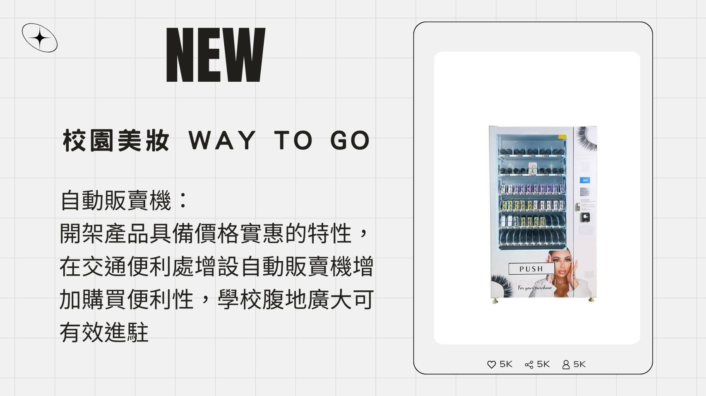
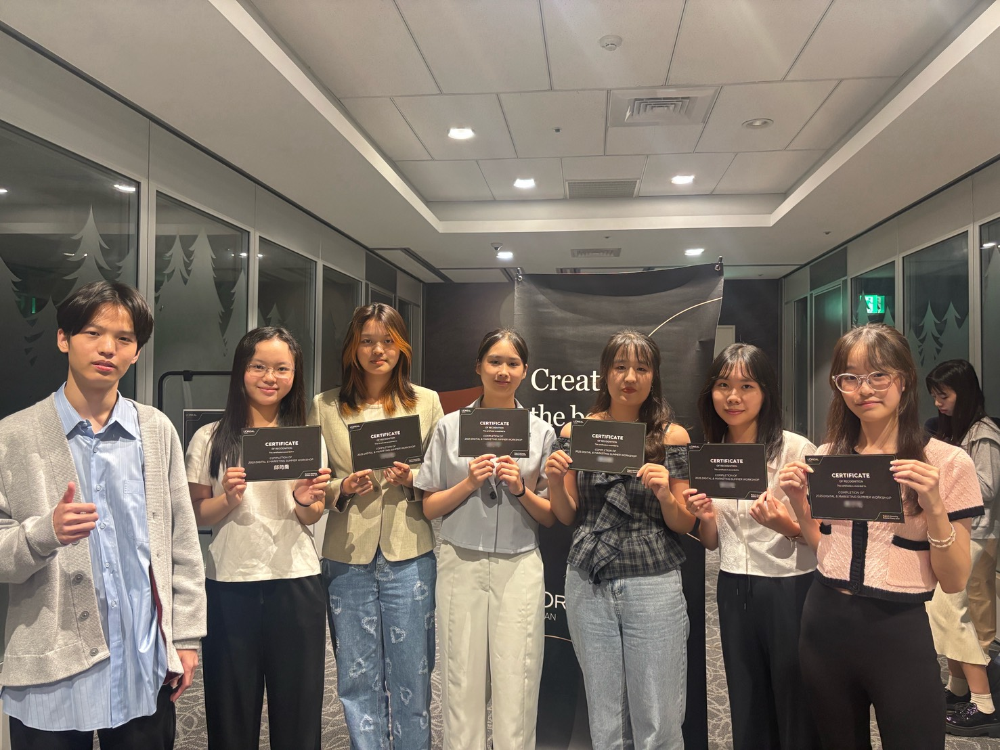

本次競賽以男性防曬為主題，探討男性保養市場的推廣困境。在限時2小時的決賽期間，我負責現場受眾訪談、企劃發想及決賽開場報告。透過訪談男性學員，我們發現，影響其購買意願的因素並非缺乏防曬需求，而是傳統美妝通路帶來的心理壓力、同儕觀感，以及對產品黏膩質地的排斥。因此，我提出結合校園自動販賣機的通路構想，藉由中性化機身設計與明確的價格標示，降低男性購買時的心理負擔。團隊進一步以 Z 世代男性為目標客群，選定強調控油與清爽質地的抗瑕防曬水乳，並結合永續包裝、首購優惠及音樂祭快閃活動，規劃完整的行銷策略。在大家齊心協力之下，最後我們於比賽中榮獲「天馬行空創意獎」。
PITCH_DECK_VIEWER.EXE1 / 2

圖1：校園美妝 way to go 自動販賣機提案簡報頁面

圖2：決賽獲頒天馬行空創意獎與組員開心合影
🏛️Project_02_Graduation_Exhibition .exe
_□×
CLICK TAB TO SWITCH ◄
PROJECT 02-A // STATIC EXHIBITION CURATION
師大附中語文資優班畢業靜態展《Ens Causa Sui》總召集人
策劃 5 大展區運用移動式展牆重塑空間動線吸引破百位師生觀展
策展理念：構築一條可步入的「時空隧道」
借鏡哲學家斯賓諾莎對「自因」（Ens Causa Sui）的詮釋，象徵不被外力定義、由自身賦予存在意義的「自在」狀態。
在畢業動態展的影像創作中，我擔任全英文短片《Alice in Wonderland》的編劇，以青春期常見的容貌焦慮作為主題。為了讓英文臺詞更貼近真實對話，我多次邀請不同夥伴試讀，觀察他們朗讀時的語氣與感受，並依據回饋反覆調整臺詞。故事以 Alice 為敘事起點，融入《愛麗絲夢遊仙境》的探索意象，刻畫主角從受外在標準影響而自我懷疑，到逐漸肯定自身獨特性的心境轉折，傳達「踏實生活即閃閃發光」的理念，使短片在全英文的表達中，仍能引起觀眾共鳴。